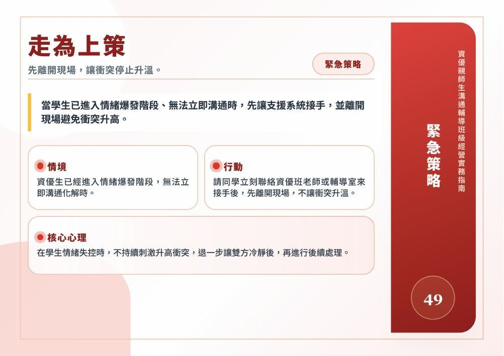
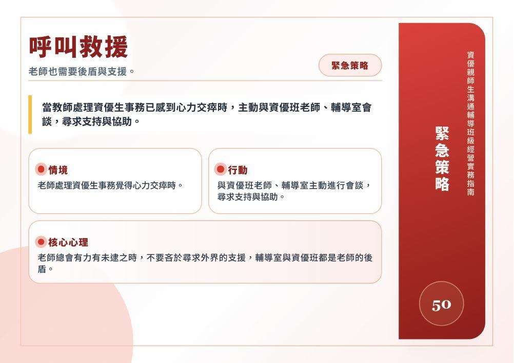

49PDF 第 106–107 頁
走為上策
先離開現場，讓衝突停止升溫。
當學生已進入情緒爆發階段、無法立即溝通時，先讓支援系統接手，並離開現場避免衝突升高。
情境
資優生已經進入情緒爆發階段，無法立即溝通化解時。
教師行動
請同學立刻聯絡資優班老師或輔導室來接手後，先離開現場，不讓衝突升溫。
核心心理
在學生情緒失控時，不持續刺激升高衝突，退一步讓雙方冷靜後，再進行後續處理。
對照原文 · PDF 第 107 頁

CHAPTER 05 / 策略 49–50
先停止升溫，讓支援進場
當衝突已達臨界點，或教師感到心力交瘁，先暫停現場互動，再向資優班教師與輔導室尋求支持。
以下文字已逐張對照原頁校對；各牌卡仍可展開「對照原文」。
先離開現場，讓衝突停止升溫。
當學生已進入情緒爆發階段、無法立即溝通時，先讓支援系統接手，並離開現場避免衝突升高。
資優生已經進入情緒爆發階段，無法立即溝通化解時。
請同學立刻聯絡資優班老師或輔導室來接手後，先離開現場，不讓衝突升溫。
在學生情緒失控時，不持續刺激升高衝突，退一步讓雙方冷靜後，再進行後續處理。

老師也需要後盾與支援。
當教師處理資優生事務已感到心力交瘁時，主動與資優班老師、輔導室會談，尋求支持與協助。
老師處理資優生事務覺得心力交瘁時。
與資優班老師、輔導室主動進行會談，尋求支持與協助。
老師總會有力有未逮之時，不要吝於尋求外界的支援，輔導室與資優班都是老師的後盾。
原文註：目錄與第108頁插畫標題為「呼叫支援」，第109頁正文標題為「呼叫救援」；網站牌卡沿用正文標題，逐頁文字保留各頁原稱。
